무선설비산업기사 (2009-03-01 기출문제)
1과목: 디지털 전자회로
1. 그림과 같은 clipping 회로에 정현파 전압을 가하면 출력 파형은?
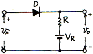
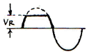
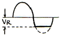
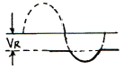
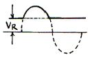
(정답률: 66%)

2. 다음 중 동기식 카운터(synchronous counter)의 설명으로 옳지 않은 것은?
- 비동기식보다 최종 플립플롭의 변화 지연시간을 단축시킬 수 있다.
- 입력펄스가 플립플롭의 모든 클록에 동시에 가해지는 구조이다.
- 저속의 카운터가 되지만 플립플롭의 회로가 간단하다.
- 모든 플립플롭이 동시에 동작한다.
(정답률: 77%)
3. 그림 (a)의 회로망에 그림 (b)의 입력파를 인가시 출력파형으로 옳은 것은?(단, 다이오드는 이상적인 특성을 갖는다.)
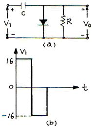
- 0[V]와 +16[V]에 클램프 된다.
- 0[V]와 -16[V]에 클램프 된다.
- 0[V]와 +32[V]에 클램프 된다.
- 0[V]와 -32[V]에 클램프 된다.
(정답률: 66%)
4. 다음 중 주로 고주파 증폭기에 사용되는 것은?
- A급
- B급
- C급
- AB급
(정답률: 83%)
5. 그림과 같은 회로에서 스위치가 2의 위치에서 t=0일 때, 1의 위치로 옮겨지는 경우에 회로에 흐르는 전류 i를 나타낸 것은?
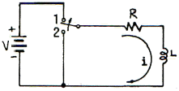
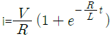
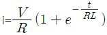
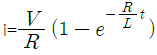
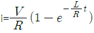
(정답률: 70%)
6. 다음 중 트랜지스터 회로의 바이어스 안정도(S)가 가장 좋은 것은?
- S = 1
- S = π
- S = 50
- S = ∞
(정답률: 85%)
7. 다음 회로의 설명 중 틀린 것은?
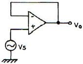
- Voltage follower 이다.
- 입력과 출력은 역상이다.
- 입력 전압과 출력 전압은 크기가 같다.
- 입력 임피던스가 매우 크다.
(정답률: 65%)
8. 다음 카르노맵을 간략화한 결과는?
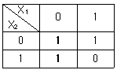
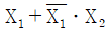
- X1+X2
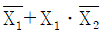
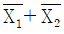
(정답률: 84%)
9. 다음은 리플 카운터(ripple counter)이다. 초기 상태 A=0, B=0, C=0 이었다면 클록펄스가 12개 인가된 후의 상태는?
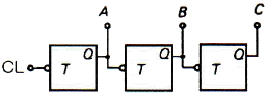
- A=0, B=0, C=1
- A=0, B=1, C=1
- A=1, B=1, C=0
- A=1, B=0, C=0
(정답률: 78%)
10. 하틀레이(Hartley) 발진기에서 궤환(feed back) 요소는?
- 콘덴서
- 코일
- 트랜스
- 저항
(정답률: 84%)
11. 그림과 같은 RC 평활회로에서 리플 함유율을 줄이려면 어떤 방법이 가장 적합한가? (단, R 》RL 이라고 가정한다.)
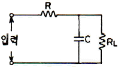
- R, C를 작게 한다.
- RL, C를 작게 한다.
- R, C를 크게 한다.
- RL, C를 크게 한다.
(정답률: 72%)
12. RC 결합 증폭회로의 이득이 높은 주파수에서 감소되는 이유는?
- 증폭 소자의 특성이 변하기 때문에
- 부성 저항이 생기기 때문에
- 결합 커패시턴스 때문에
- 출력회로의 병렬 커패시턴스 때문에
(정답률: 71%)
13. 다음 중 정류회로의 구성 요소와 거리가 먼 것은?
- 전원 변압기
- 평활회로
- 안정화 회로
- 궤환회로
(정답률: 76%)
14. 다음 중 부궤환에 의해서 얻을 수 있는 효과가 아닌것은?
- 외부 변화에 덜 민감하므로 이득의 감도를 줄일 수 있다.
- 비선형 왜곡을 줄일 수 있다.
- 불필요한 전기 신호에 의한 영향을 줄일 수 있다.
- 궤환없는 증폭기에 비해 대역폭이 감소한다.
(정답률: 70%)
15. 다음 논리식은 무슨 법칙을 활용하여 전개한 것인가?
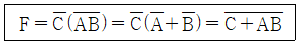
- 보수와 병렬의 법칙
- 드모르간(De Morgan)의 법칙
- 교차와 병렬의 법칙
- 적(積)과 화(和)의 분배의 법칙
(정답률: 94%)
16. 다음 중 펄스파가 상승해 가는 기간의 10[%]에서 90[%]까지 걸리는 시간을 무엇이라 하는가?
- 지연시간
- 하강시간
- 축적시간
- 상승시간
(정답률: 90%)
17. 그림의 수정진동자 등가회로에서 병렬공진주파수(fP)는?
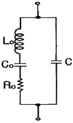
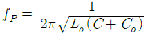
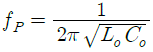
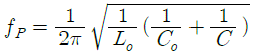
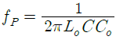
(정답률: 68%)
18. 다음과 같은 회로의 논리 동작은? (단, 부논리이며 A, B는 입력단자이다.)
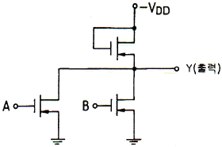
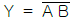
- Y = A B
- Y = A+B
- Y
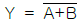
(정답률: 76%)
19. 이미터 접지일 때 전류증폭율이 각각 hFE1, hFE2인 두개의 트랜지스터 Q1과 Q2를 그림과 같이 접속하였을 경우 컬렉터 전류 IC는?
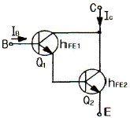
- IC = hFE1ㆍhFE2ㆍIB
- IC = (hFE1/hFE2)IB
- IC = hFE2(hFE1+1)IB
- IC = hFE1ㆍIB+hFE2(hFE1+1)ㆍIB
(정답률: 84%)
20. 다음 논리회로의 출력 C를 진리표 내에서 바르게 나타낸 것은?
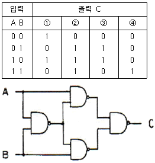
- ①
- ②
- ③
- ④
(정답률: 80%)
2과목: 무선통신 기기
21. 다음 중 SSB 통신방식에 대한 설명으로 적합하지 않은 것은?
- S/N비가 DSB에 비해 개선된다.
- DSB에 비해 인접 채널과의 사이에서 생기는 비트가 많아진다.
- DSB의 상하측파대 중 한 측파대만을 통신에 이용한다.
- 일반적으로 대역통과 여파기를 이용하여 원하는 측파대를 만든다.
(정답률: 82%)
22. 다음 중 정보 비트의 전송률이 일정할 때 채널 대역폭이 가장 작은 변조방식은?
- 2진 ASK
- 2진 FSK
- 8진 QAM
- 16진 PSK
(정답률: 68%)
23. 다음 중 PLL(Phase locked loop) 구성에 속하는 것은?
- 샘플링(Sampling) 회로
- 주파수 체배 회로
- 전압제어발진기(VCO) 회로
- 프리엠퍼시스 회로
(정답률: 80%)
24. 변조속도가 2400[Baud]일 때 4상식 위상변조 방식을 사용하는 경우의 데이터 신호 속도는 몇 [bps] 인가?
- 2400[bps]
- 4800[bps]
- 7200[bps]
- 9600[bps]
(정답률: 83%)
25. 다음 중 FM 수신기에 사용되는 리미터의 용도로 가장 적합한 것은?
- 기생 진동을 방지하기 위해서
- 충격성 잡음을 방지하기 위해서
- 전원 전압의 변동을 방지하기 위해서
- 고조파에 의한 찌그러짐을 방지하기 위해서
(정답률: 54%)
26. 다음 중 무선 송신기에 사용되는 발진기의 요구 조건으로 적합하지 않은 것은?
- 고조파 발생이 많을 것
- 주파수의 미조정이 용이할 것
- 주파수 안정도가 높을 것
- 넓은 온도 범위에 걸쳐서 발진출력이 일정할 것
(정답률: 64%)
27. 다음 중 FM 송신기의 전력 츨정 방법으로 적합하지 않은 것은?
- 열량계에 의한 방법
- C-M형 전력계에 의한 방법
- 수부하에 의한 방법
- 볼로미터 브리지에 의한 방법
(정답률: 85%)
28. FDM과 비교한 PCM 다중 통신의 특징에 대한 설명으로 적합하지 않은 것은?
- 전송품질이 안정하다.
- 누화 등의 방해가 적다.
- 양자화 잡음 등 PCM 특유의 잡음이 있다.
- 중계할 때마다 열잡음, 왜곡잡음이 가산된다.
(정답률: 83%)
29. 다음 중 정합 필터(matched filter)에 대한 설명으로 적합하지 않은 것은?
- 최적 임계치는 입력 신호 에너지의 반과 같다.
- 본질적으로 비동기 검파기이다.
- 하나의 곱셈기와 하나의 적분기로 구현할 수 있다.
- 필터 출력단에서 SNB(Signal to Noise Ratio)을 최대화하는데 목적이 있다.
(정답률: 64%)
30. 슈퍼헤테로다인 수신기에서 수신 신호파가 1000[kHz], 국부발진주파수가 1455[kHz]라면 영상주파수는?
- 1000[kHz]
- 1455[kHz]
- 1910[kHz]
- 2455[kHz]
(정답률: 68%)
31. FM 수신기에서 스켈치 회로의 용도로 가장 적합한 것은?
- FM 파의 복조회로
- 페이딩에 의한 진폭성분 제거
- 자동적으로 주파수 편이를 제거
- 수신신호 없을 때 내부 잡음 제거
(정답률: 75%)
32. 다음 중 디지털 변조방식에 속하는 것은?
- DSB
- SCFM
- PM
- QAM
(정답률: 80%)
33. 다음 중 정류회로의 리플 함유율을 감소시키는 방법으로 적합하지 않은 것은?
- 입력 전원의 주파수를 높게 한다.
- 평활용 초크의 인덕턴스를 크게 한다.
- 부하저항이 적을 때 콘덴서 입력형으로 한다.
- π형 평활회로에서 출력측 콘덴서 용량을 크게 한다.
(정답률: 59%)
34. 다음 중 송신시스템에서 발생하는 스퓨리어스의 발생원인으로 적합하지 않은 것은?
- 상호 변조
- 주파수 체배
- 푸시풀 증폭
- 증폭기의 비직선성
(정답률: 71%)
35. 8진 PSK에서 반송파 간 위상 차는?
- π
- π/2
- π/4
- π/8
(정답률: 57%)
36. 다음 중 연축전지의 충전을 완료했을 때 나타나는 현상에 대한 설명으로 적합하지 않은 것은?
- 전해액의 온도는 낮아진다.
- 전해액의 비중이 높아진다.
- 가스(물거품)가 많이 발생한다.
- 단자전압이 상승하여 2.6~2.8[V] 정도가 된다.
(정답률: 74%)
37. 다음 중 이동통신용 수신 전파신호를 측정할 때 필요한 장비에 속하지 않는 것은?
- LNA
- GPS
- 방향성 결합기
- 스펙트럼 분석기
(정답률: 55%)
38. 과부하 잡음이 없는 경우 PCM 양자화시 사용 비트 수를 1비트 증가시키면 S/Nq(신호전력 대 양자화 잡음 전력비)는 몇 [dB] 개선(증가)되는가?
- 3[dB]
- 6[dB]
- 9[dB]
- 12[dB]
(정답률: 69%)
39. 다음 중 무선 수신기에서 고주파 저잡음 증폭기를 사용하는 목적으로 적합하지 않은 것은?
- 감도 향상
- 신호대 잡음비(S/N) 개선
- 근접한 간섭신호 제거
- 영상주파수 선택도 개선
(정답률: 43%)
40. 진폭 변조 회로의 출력을 오실로스코프로 측정하였더니 다음과 같았다. a = 3b 이면 변조율은 몇 [%] 인가?
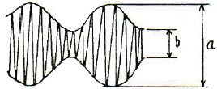
- 80[%]
- 50[%]
- 33.3[%]
- 25[%]
(정답률: 65%)
3과목: 안테나 개론
41. 다음 중 손실저항의 종류에 속하지 않는 것은?
- 접지저항
- 도체저항
- 복사저항
- 와전류손실
(정답률: 67%)
42. 다음 중 초단파대용 안테나에 속하지 않는 것은?
- 야기 안테나
- 웨이브 안테나
- 슈퍼 게인 안테나
- Corner reflector 안테나
(정답률: 59%)
43. 다음 중 폴디드 다이폴 안테나(Folded Dipole Antenna)의 특성에 대한 설명으로 적합하지 않은 것은?
- Q가 낮으므로 약간 광대역성을 갖는다.
- 평행 2선식 급전선과 정합장치가 불필요하다.
- 실효길이는 반파장 다이폴 안테나의 약 2배이다.
- 전계강도, 이득, 지향성은 λ/4 수직접지 안테나와 비슷하다.
(정답률: 52%)
44. 특성 임피던스가 50[Ω]인 급전선에 98[Ω]의 부하를 접속하였다. 정합시키기 위하여 Q 변성기를 삽입하고자 한다면 Q 변성기의 임피던스를 몇 [Ω]으로 하여야 하는 가?
- 52.5[Ω]
- 60[Ω]
- 70[Ω]
- 84.5[Ω]
(정답률: 74%)
45. 다음 중 전자나팔(혼) 안테나 특성에 대한 설명으로 적합하지 않은 것은?
- 부엽이 많다.
- 광대역성이다.
- 지향성이 예민하다.
- 이득은 개구면적에 비례하고, 비교적 높다.
(정답률: 73%)
46. 다음 중 안테나의 상대이득을 나타내는 기준안테나로 가장 적합한 것은?
- 무손실 등방성 안테나
- 무손실 반파장 다이폴 안테나
- 무손실 수직접지 안테나
- 무손실 미소다이폴 안테나
(정답률: 79%)
47. 다음 중 급전선로의 정재파비를 낮게하고자 하는 이유로 가장 적합한 것은?
- 스퓨리어스 방출을 감소시키기 위해
- 저온에서 급전선로를 가열하기 위해
- 인접 무선기기와의 혼신을 줄이기 위해
- 보다 효과적인 전자파 에너지의 전달을 위해
(정답률: 80%)
48. 다음 중 이득이 크고 광대역 특성을 가져 초단파대 TV 수신용 안테나로 널리 사용되는 것은?
- 야기 안테나
- 애드콕 안테나
- 파라볼라 안테나
- 반파장 다이폴 안테나
(정답률: 78%)
49. 다음 중 전파의 통로에 의한 분류에서 1000[km] 이상의 원거리 통신에 가장 적합한 것은?
- 직접파
- 지표파
- 대지 반사파
- 전리층 반사파
(정답률: 85%)
50. 다음 중 카세그레인 안테나에 대한 설명으로 적합하지 않은 것은?
- 부엽이 많다.
- 위성통신용 지구국 고이득 안테나로 사용된다.
- 1차 방사기(전자나팔)를 주반사기 쪽에 설치한다.
- 누설전력이 천체방향으로 향하기 때문에 대지에성의 잡음을 적게 받는다.
(정답률: 84%)
51. 다음 중 도파관의 임피던스 정합 방법이 아닌 것은?
- 스터브에 의한 정합
- 도파관 창에 의한 정합
- Q 변성기에 의한 정합
- 다이플렉서에 의한 정합
(정답률: 64%)
52. 다음 중 판상 안테나에 속하지 않는 것은?
- 슬롯 안테나
- 헤리컬 안테나
- 박쥐 날개형 안테나
- 코너 리플렉터 안테나
(정답률: 63%)
53. 다음 중 최대사용주파수(MUF)를 변하게 하는 원인으로 가장 적합한 것은?
- 송신전력
- 지구등가반경계수
- 태양의 흑점 수
- 상층 대기권의 풍속
(정답률: 67%)
54. 다음 중 라디오 덕트의 생성원인에 의한 분류로 적합하지 않은 것은?
- 이류성 덕트
- 접지형 덕트
- 전선에 의한 덕트
- 야간냉각에 의한 덕트
(정답률: 65%)
55. 복사저항 20[Ω], 손실저항 5[Ω]인 안테나에 100[W]의 전력이 공급되고 있을 때의 복사 전력은 얼마인가?
- 60[W]
- 80[W]
- 90[W]
- 100[W]
(정답률: 76%)
56. 다음 중 델린저 현상에 대한 설명으로 적합하지 않은 것은?
- 태양 표면의 폭발에 의하여 자외선이 증가하여 이 현상이 발생한다.
- 이 현상의 지속시간은 1~2일 정도로 비교적 길다.
- 주로 저위도 지방에서 주간에만 발생한다.
- D 또는 E 층의 전자밀도가 증가한다.
(정답률: 71%)
57. 다음 중 원거리 통신에 이용될 수 있는 것은?
- 정전계
- 유도계
- 복사계
- 유도계 및 정전계
(정답률: 73%)
58. 다음 중 지상파의 전계강도에 영향을 주는 요소에 속하지 않는 것은?
- 주파수
- 회절 상태
- 송신기 출력
- 전리층의 상태
(정답률: 64%)
59. 반파장 다이폴 안테나의 실효면적은 약 몇 [m2] 인가?
- 0.11 λ2 [m2]
- 0.12 λ2 [m2]
- 0.13 λ2 [m2]
- 0.14 λ2 [m2]
(정답률: 66%)
60. 다음 중 급전선에서 정재파비가 1인 경우에 대한 설명으로 가장 적합한 것은?
- 완전 정합상태이다.
- 반사계수의 값이 1이다.
- 급전선의 고유 임피던스가 1[Ω]이다.
- 급전선의 표피효과를 무시할 수 있을 때이다.
(정답률: 86%)
4과목: 전자계산기 일반 및 무선설비기준
61. 프로그램카운터의 기능에 대한 설명으로 옳은 것은?
- 다음에 수행할 명령의 주소를 기억하고 있음
- 데이터가 기억된 위치를 지시함
- 기억하거나 읽은 데이터를 보관함
- 수행중인 명령을 기억함
(정답률: 91%)
62. 다음 중 1비트 기억 장치는?
- 플립플롭
- 레지스터
- 누산기
- 디코더
(정답률: 85%)
63. Binary Code 11010을 Gray Code로 변환한 값은?
- 11011
- 10111
- 11101
- 11110
(정답률: 88%)
64. 다음 중 소프트웨어 수명을 연장시키는 목표와 가장 거리가 먼 것은?
- 정확성
- 유지 보수의 용이성
- 재사용성
- 유연성
(정답률: 65%)
65. 다음 중 원시 프로그램을 목적 프로그램으로 바꾸어 주는 것은?
- 어셈블리언어
- 프로그램라이브러리
- 연계편집프로그램
- 어셈블러
(정답률: 82%)
66. 다음 그림과 같은 트리를 후위 순회(postorder -traversal)한 결과는?
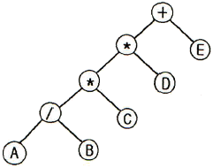
- +**/ABCDE
- AB/C*D*E+
- A*B+C*D/E
- A*B+CD*/E
(정답률: 84%)
67. 다음 중 n개의 비트로 표시할 수 있는 데이터의 수는?
- n 개
- n2 개
- 2n 개
- 2n-1 개
(정답률: 80%)
68. 다음은 10진수를 표현하는 이진 코드(binary code)들이다. 이들 중 자체 보수화(self-complementary)가 불가능한 코드는?
- 51111 코드
- BCD 코드
- Excess-3 코드
- 2421 코드
(정답률: 66%)
69. 다음 중 CPU에 인터럽트가 발생할 때의 OS 동작 설명으로 옳지 않은 것은?
- 수행중인 프로세스나 스레드의 상태를 저장한다.
- 인터럽트 종류를 식별한다.
- 인터럽트 서비스 루틴을 호출한다.
- 인터럽트 처리 결과를 텍스트 형식의 파일로 저장한다.
(정답률: 77%)
70. 다음 레지스터들 중에서 Read하거나 Write 할 때 반드시 거쳐야 하는 레지스터는?
- MAR(Memory Address Register)
- MBR(Memory Buffer Register)
- PC(Program Counter)
- IR(Instruction Register)
(정답률: 65%)
71. 다음 ( ) 안에 들어갈 내용으로 가장 적합한 것은?
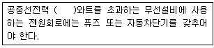
- 5
- 10
- 20
- 50
(정답률: 88%)
72. 주어진 발사에서 용이하게 식별되고 측정할 수 있는 주파수로 정의되는 것은?
- 할당주파수
- 특성주파수
- 기준주파수
- 지정주파수
(정답률: 74%)
73. 다음 중 무선국을 개설할 수 있는 자는?
- 외국의 법인 또는 단체
- 외국정부 또는 그 대표자
- 대한민국 국민으로 파산선고를 받을 자
- 전파법을 위반하여 금고이상의 실형을 선고받은 자
(정답률: 83%)
74. 535[kHz] 초과 1606.5[kHz] 이하 방송국의 주파수허용편차는 얼마인가?
- 0.1[%]
- 1[Hz]
- 10[Hz]
- 100만분의 100
(정답률: 64%)
75. “특정한 주파수의 용도를 정하는 것”으로 정의되는 것은?
- 주파수 분배
- 주파수 할당
- 주파수 지정
- 주파수 재배치
(정답률: 60%)
76. 다음 중 전파법의 목적으로 적합하지 않은 것은?
- 공공복리의 증진
- 전파 이용의 절제
- 전파관련 분야의 진흥
- 전파에 관한 기술개발을 촉진
(정답률: 77%)
77. 방송통신위원회가 전파자원을 확보하기 위하여 시책을 마련하고 시행하여야 할 사항에 속하지 않는 것은?
- 새로운 주파수 이용기술 개발
- 지역 간 사용주파수의 등록ㆍ개발
- 이용 중인 주파수의 이용효율 향상
- 국가간 전파의 혼선을 없애고 방지하기 위한 협의ㆍ조정
(정답률: 56%)
78. 다음 중 무선국의 개설허가의 유효기간이 1년인 무선국은?
- 실험국
- 기지국
- 간이무선국
- 선상통신국
(정답률: 84%)
79. 다음 중 공중선계가 충족하여야 하는 조건으로 적합한 것은?
- 감도가 충분할 것
- 내부잡음이 적을 것
- 공중선은 이득이 평탄할 것
- 정합은 신호의 반사손실이 최소화가 되도록 할 것
(정답률: 40%)
80. 다음 방송통신 기기 중 인증의 모두가 면제되는 기기에 해당하지 않는 것은?
- 시험연구를 위하여 제조하는 기기
- 국내에서 판매하지 아니하고 수출전용으로 제조하는 기기
- 전시회 등 행사에서 판매를 목적으로 수입하는 기기
- 외국으로부터 도입하는 선박 또는 항공기에 설치된 기기
(정답률: 75%)